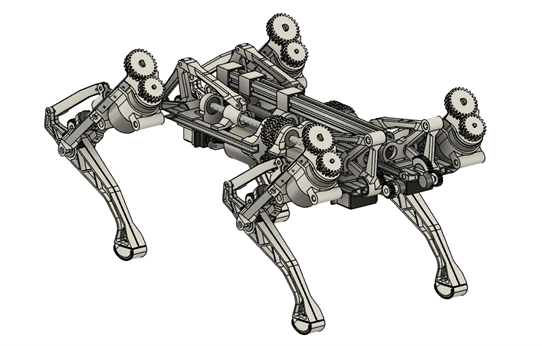
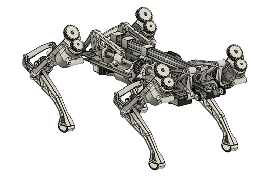

UQ Mars Newsletter - Week 1
Welcome to all our new members! Whether you've had the chance to meet our exec at market day or the Brisbane Tech Clubs Summer BBQ, or are still to make it to an event, we look forward to getting to know everyone throughout the year.
And to our MARS veterans, we've missed you like a robot misses the good old days of punch cards and vacuum tubes.
We've been working hard to make UQ MARS bigger and better than ever before. Our robot army has grown exponentially, and we're ready to take over the world... or at least win some competitions!
Get ready for some electrifying workshops that will shock your circuits and leave you buzzing with excitement. We've got some truly 'out of this world' ideas for the upcoming robotics competitions that we can't wait to share with you. So, strap on your thinking caps, oil your joints, and get ready to blast off into another stellar year with UQ MARS. It's going to be a wild ride, and we're so excited to have you all on board!
Please find our upcoming events below, as well as our new project shout-out section. If you have a cool project going on, we'd love to feature you in our next shoutout - shoot us an email or DM our socials!
Upcoming Events
-
Welcome Night
Location: 46-243 - Andrew N. Liveris Building, Collaborative RoomJoin UQMARS for our welcome night! 🌝🤖
Time: 6pm Tuesday 21st Feb (Tomorrow!)
Type: Social event
This is a great opportunity to get to know the new and returning UQMARS members and execs. We will also share some information about our upcoming workshops, industry events, talks and competitions

-
Big Fat Small Clubs Launch 2023: Traffic Light Party
Location: Lala Land at the Prince Consort HotelLooking to start Sem 1 with a wild night out? 🍻
Time: 7pm this Thursday (23rd Feb)
Type: Social event
Looking for dates or maybe just a night with mates? 😁
Maybe somewhere in between?
Look no further than the 𝟐𝟎𝟐𝟑 𝐁𝐢𝐠 𝐅𝐚𝐭 𝙎𝙢𝙖𝙡𝙡 𝘾𝙡𝙪𝙗 𝐋𝐚𝐮𝐧𝐜𝐡 on Feb 23rd!
The party will start strong at The Prince Consort @ the Valley at 7pm, before progressing to kickons at Kickons (around the block) from 11pm til late!
The party is traffic light themed - so the colour of the wristband you wear determines what you’re up for!
🟢 Single and ready to mingle
🟡 It’s complicated 🤷
🔴 Taken - mates only
Take the opportunity to mix and mingle with members from 17 different societies and faculties at UQ and QUT, from…
Women in economics 📈 to design ✏️…
Ski and snowsports ⛷ to backyard sports 🏏…
Photography 📸 to social justice 🪧🇺🇳…
And VR and robotics 🦾 to art 🖼…
and everything in between!
And let's not forget about the beverages! We've got plenty to go around and keep the night wild.
Keep an eye on our socials so you don't miss the ticket release!! 🥳🥳🥳
Tickets: $10 (Member), $15 (Non-Member)

-
Making Robots Think Faster
Location: locationRaghav will be talking about how we can use specialised computer hardware, especially GPUs that are common in gaming, to speed up how robots perceive and plan in the world efficiently.
Time: Tuesday, 28 Feb 2023 at 18:00
Type: Technical event
Difficulty: Moderate
He will be briefly introducing:
- CPU vs specialised hardware
- GPUs and parallel execution
- The current hardware options (Intel/NVIDIA/AMD GPUs, FPGAs) and the software scene (CUDA, OpenCL, SYCL)
- Examples of how simple hardware accelerated code can be written
- How you could get start off and get involved
There's no prerequisites to understanding the talk! It would be beneficial to have some knowledge of basic computer hardware and simple C programming, but Raghav will explain everything.

-
UQMARS Special General Meeting (SGM)
Location: 46-243 - Andrew N. Liveris Building, Collaborative RoomJoin us in week 3 for our Special General Meeting where we'll be making some important changes to our constitution! 📜
Time: Thursday, 9 March 2023 at 6pm
Type: Administrative
Members are also encouraged to propose any changes they wish to be made to the constitution as well (via pull request on our github).
You can access our constitution here: https://github.com/uqmars/constitution
Weekly Member Shout-Out
-
Zac Apelt
I graduated from Marist College Ashgrove last year and I love robotics and enjoy building and flying RC planes. I’ve competed in a few competitions, including the UAV challenge where my team placed third and received the innovation award for being the first team to use computer vision to identify the target as well as the RoboCup competition where we also placed third in the micromouse inspired division. To help with my projects, I turned my bedroom int an electronics test lab, complete with almost everything you could need, I’m just missing a vector network analyser!
 

For the last couple of years, I’ve been working on developing a quadrupedal robot, loosely based on Boston Dynamics’ Spot. I severely misjudged the complexity of the problem, resulting in 7 major hardware iterations (soon to be 8) and with each attempt getting progressively better but just falling short. I wanted to make it more advanced than just using 12 servos, however, using brushless motors with field-oriented control was far too expensive. The cost of the project has been the single largest limiting factor; I wanted to keep it less than $500 (working at Jaycar with the staff discount definitely helps!). This made a difficult problem much harder and has forced me to develop my own actuators and motor controllers. The end goal is to be able to have it walk around autonomously and map its environment. I’ve learned so much about software, electrical and mechanical design with this project and I’m really excited to be part of MARS and collaborate with other likeminded people! Fun fact: I once built a 4-meter-long wind tunnel under my house to collect data about the airfoils for my RC planes.
Our Subject Guide
We are currently developing a comprehensive course guide to aid students in the selection of their courses.
The guide will present suggested program structures, enrolment plans, course profiles,
and offer the chance to inform students of the specific pathways available within Mechatronics and
adjacent specialisations such as Electrical/Computer Engineering. We will aim to give specialised
advice from our Exec team and various UQ MARS Alumni regarding study advice, course selection and
general career advice.
Please note that the course guide is currently a work in progess. Check it out using the button below.
UQ MARS Subject Guide